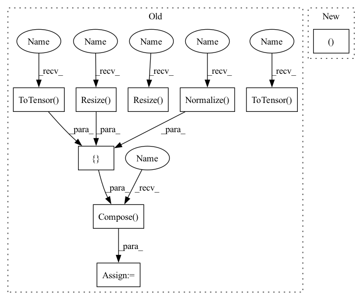

Pattern ID :32591
Before Change
if mode == "train":
self.transform = transforms.Compose([lambda x: Image.open(x).convert("RGB"),
transforms.Resize( (self.resize, self.resize)) ,
// transforms.RandomHorizontalFlip(),
// transforms.RandomRotation(5),
transforms.ToTensor() ,
transforms.Normalize((0.485, 0.456, 0.406), (0.229, 0.224, 0.225))
])
else:
self.transform = transforms .Compose([ lambda x: Image.open(x).convert("RGB"),
transforms.Resize( (self.resize, self.resize)) ,
transforms.ToTensor() ,
transforms.Normalize( (0.485, 0.456, 0.406), (0.229, 0.224, 0.225))
])
self.path = os.path.join(root, "images") // image path
csvdata = self.loadCSV(os.path.join(root, mode + ".csv")) // csv path
self.data = []After Change
self.setsz = self.n_way * self.k_shot // num of samples per set
self.querysz = self.n_way * self.k_query // number of samples per set for evaluation
print("shuffle DB :%s, b:%d, %d-way, %d-shot, %d-query" % (
mode, batchsz, n_way, k_shot, k_query ))
// load subgraph list
with open(os.path.join(root, path_s), "rb") as f:In pattern: SUPERPATTERN
Frequency: 3
Non-data size: 9
Instances Fragment ID: 94800933
Project Name: mims-harvard/g-meta
Commit Name: aed3468b5f71c857f788169b34b97a411628930b
Time: 2020-03-02
Author: cosamhkx@gmail.com
File Name: src/subgraph_data_processing.py
M Class Name: Subgraphs
N Class Name: Subgraphs
M Method Name: __init__(9)
N Method Name: __init__(9)
M Parent Class: Dataset
N Parent Class: Dataset
M File Name: src/subgraph_data_processing.py
N File Name: src/subgraph_data_processing.py
M Start Line: 44
M End Line: 70
N Start Line: 42
N End Line: 53
Before Change
cudnn.benchmark = True
// Data loading code
normalize = T.Normalize(mean=[0.485, 0.456, 0.406], std=[0.229, 0.224, 0.225])
train_transform = T.Compose([
T.Resize( 256) ,
T.RandomResizedCrop(224),
T.RandomHorizontalFlip(),
T.ToTensor() ,
normalize
])
val_transform = T.Compose([
T.Resize( 256) ,
T.CenterCrop(224),
T.ToTensor() ,
normalize)
dataset = datasets.__dict__[args.data]
partial_dataset = partial(dataset)
train_source_dataset = dataset(root=args.root, task=args.source, download=True, transform=train_transform)After Change
print("train_transform: ", train_transform)
print("val_transform: ", val_transform)
train_source_dataset, _, val_dataset, test_dataset, num_classes, args.class_names = \
utils.get_dataset(args.data, args.root, args.source, args.target, train_transform, val_transform)
train_source_loader = DataLoader(train_source_dataset, batch_size=args.batch_size,
shuffle=True, num_workers=args.workers, drop_last=True) Fragment ID: 94800928
Project Name: thuml/transfer-learning-library
Commit Name: 1d780e2bcc7b08075283ebaf2160f7f2b09dabef
Time: 2021-08-11
Author: 13126830206@163.com
File Name: examples/domain_adaptation/partial/source_only.py
M Class Name: AnonimousClass
N Class Name: AnonimousClass
M Method Name: main(1)
N Method Name: main(1)
M Parent Class:
N Parent Class:
M File Name: examples/domain_adaptation/partial/source_only.py
N File Name: examples/domain_adaptation/partial/source_only.py
M Start Line: 49
M End Line: 139
N Start Line: 48
N End Line: 120
Before Change
mode, batchsz, n_way, k_shot, k_query, resize))
if mode == "train":
self.transform = transforms.Compose([ lambda x: Image.open(x).convert("RGB"),
transforms.Resize( (self.resize, self.resize)) ,
// transforms.RandomHorizontalFlip(),
// transforms.RandomRotation(5),
transforms.ToTensor() ,
transforms.Normalize( (0.485, 0.456, 0.406), (0.229, 0.224, 0.225))
])
else:
self.transform = transforms.Compose([lambda x: Image.open(x).convert("RGB"),
transforms.Resize( (self.resize, self.resize)) ,
transforms.ToTensor() ,
transforms.Normalize((0.485, 0.456, 0.406), (0.229, 0.224, 0.225))
])
After Change
self.setsz = self.n_way * self.k_shot // num of samples per set
self.querysz = self.n_way * self.k_query // number of samples per set for evaluation
print("shuffle DB :%s, b:%d, %d-way, %d-shot, %d-query" % (
mode, batchsz, n_way, k_shot, k_query ))
// load subgraph list
with open(os.path.join(root, path_s), "rb") as f: Fragment ID: 94800929
Project Name: mims-harvard/g-meta
Commit Name: aed3468b5f71c857f788169b34b97a411628930b
Time: 2020-03-02
Author: cosamhkx@gmail.com
File Name: src/subgraph_data_processing.py
M Class Name: Subgraphs
N Class Name: Subgraphs
M Method Name: __init__(9)
N Method Name: __init__(9)
M Parent Class: Dataset
N Parent Class: Dataset
M File Name: src/subgraph_data_processing.py
N File Name: src/subgraph_data_processing.py
M Start Line: 44
M End Line: 70
N Start Line: 42
N End Line: 53
Before Change
image_to_tensor = transforms.Compose([
transforms.Resize(input_res),
transforms.ToTensor() ,
transforms.Normalize((0.5, 0.5, 0.5), (0.5, 0.5, 0.5))
])
mask_to_tensor = transforms.Compose([
transforms.Resize( input_res) ,
transforms.ToTensor() ,
transforms.Normalize( (0.0, ), (1.0, ))
])
image_to_pymaf_tensor = transforms.Compose([
transforms.Resize( 224) ,
transforms.Normalize(mean=constants.IMG_NORM_MEAN,
std=constants.IMG_NORM_STD)
])After Change
"crop_shape": img_for_crop.shape,
"M": M}
return img_tensor, img_hps, img_ori, img_mask, uncrop_param
def get_transform(center, scale, res):
Generate transformation matrix. Fragment ID: 94800941
Project Name: yuliangxiu/icon
Commit Name: 0198e25265de836a9b0c79b017afa7fb5edcb56a
Time: 2022-02-13
Author: yuliang.xiu@tuebingen.mpg.de
File Name: lib/pymaf/utils/imutils.py
M Class Name: AnonimousClass
N Class Name: AnonimousClass
M Method Name: process_image(3)
N Method Name: process_image(3)
M Parent Class:
N Parent Class:
M File Name: lib/pymaf/utils/imutils.py
N File Name: lib/pymaf/utils/imutils.py
M Start Line: 54
M End Line: 117
N Start Line: 78
N End Line: 135